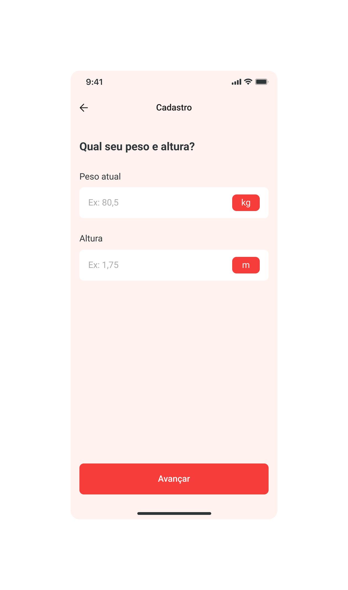

Quatro vetores guiam toda decisão visual. Cada tela, cada cor, cada ticker serve a um destes quatro. O que não serve, é decoração descartável.
Comparação apples-to-apples: o Dashboard de Dieta Diária renderizado em cada uma das três direções exploradas. Duas foram descartadas. Uma foi escolhida. Cada direção é mostrada na sua própria estética nativa — sem traições.
Seis critérios que importam especificamente para a NutriHero. As notas são observações, não vereditos — cada direção ganha em algo que as outras não conseguem.
| Critério | Telemetria | Espelho | Pulso ✓ |
|---|---|---|---|
| Conversão no onboarding |
Lê como séria; falta puxão emocional.
|
Quadro do eu do futuro é o motor. Ganha aqui.
|
Alta e direta; arrisca intimidar quem não treina.
|
| Confiança em dados / precisão |
Manômetros, horizonte, mono. Imbatível aqui.
|
Editorial atrapalha a leitura técnica.
|
Números 96–140pt fazem o trabalho.
|
| Diferenciação visual no feed |
Pode ler como concorrente Whoop / Strava.
|
Premium, mas distante de fitness BR.
|
Ticker laranja em escuro — único no nicho.
|
| Vida pós-MVP (treino, ONG, B2B) |
Treino encaixa; comunidade fica fria.
|
Premium escala para tudo — mas exige fotografia.
|
Tudo cabe. Marketplace, comunidade, ONG.
|
| Risco de exclusão (mulher / não-malhador) |
Risco alto. Bloomberg afasta.
|
Editorial atrai. Risco baixo.
|
Risco médio. Voz precisa amaciar no copy.
|
| Sustentabilidade (1 designer / 1 dev) |
Componentes complexos (manômetros, dials).
|
Fotografia de qualidade é caro de produzir.
|
Tipo + tickers. Sistema enxuto.
|
| Quem | De onde vem | O que espera | Implicação visual |
|---|---|---|---|
| Seguidor dos influenciadores parceiros | Reels de influenciador intenso | Algo "à altura" do criador — não wellness amigável | Tipografia gigante, ticker, contraste forte |
| Frequentador de academia · cutting/bulking | Já usa Strong, MyFitnessPal, Yazio | Diferenciação imediata vs concorrentes | Números em mono, edge-to-edge, sem rosca |
| Galera "projeto verão" (set–fev) | Decisão impulsiva via influencer | Aspiração + velocidade + custo justificado | Pulso visível no preview; paywall com ticker |
| Mulher / usuária 30+ | Indicação de amiga ou nutricionista | Não ser tratada como bro de academia | Voz que amacia no copy, tipo segue alto; validação obrigatória |
| Parceiro B2B (marca de suplemento) | Co-marketing | Marca que sobe junto sem rebaixar | Esporte premium, telemetria de corrida |
| ✓ Pulso é | ✗ Pulso não é |
|---|---|
| Cinética — as coisas se movem | Estática como uma planilha |
| Direta — sem amaciar | Fofa, com "ops!" e emoji |
| Nativa de esporte | Genérica de wellness |
| Desafiadora — você está aqui para mudar | Coach motivacional ("você consegue, campeão!") |
| Confiante — números a 140pt, é sério | Tímida, escondendo dados em cards |
| Premium — telemetria de corrida | Loja de suplemento com caveiras e fogo |
| Indulgência no copy, não no cromado | Suavização visual ("sua jornada bonita") |
Pulso é só escuro. A página nunca clareia além de Aço. O sinal funciona porque é escasso — Arco em no máximo 2 elementos por tela, Atenção 1× por semana.
#FF5B1F e #F7D74C. Nenhum gradient, nenhum brilho neon, nenhum cromado "gamer".#EEEBE3. Branco puro lê como tela de loading travada — Giz lê como papel.O tipo carrega o trabalho emocional — não o itálico, não a cor, não o gradient. Pulso não tem voz itálica.
| Token | Família | Peso | Tamanho | Tracking | Uso |
|---|---|---|---|---|---|
| display-hero | Archivo | Black 900 | 96–140px | −4–5% | Número-manchete da home |
| display-1 | Archivo | Black 900 | 56–64px | −4% | Títulos de tela (recalibrar, projeção) |
| display-2 | Archivo | Black 900 | 26–32px | −2% | Section headers · subhead |
| ticker | Archivo Narrow | Medium 500 | 11–22px | +12–14% | Pulso de Recalibração · rótulos |
| data-xl | JetBrains Mono | Bold 700 | 72–112px | −4% | Numerais em escala hero |
| data-md | JetBrains Mono | Medium 500 | 14–18px | 0 | Macros · linhas tabulares |
| data-sm | JetBrains Mono | Medium 500 | 10–12px | +10–18% | Eyebrows · labels técnicos |
| ui-body | Inter Tight | Regular 400 | 14–16px | 0 | Corpo de texto longo |
Uma linha Arco de 2px que vive sob o número diário. Pulsa devagar quando o usuário está no plano. Mais rápida quando não está. É indicador ambiente, não gráfico. No segundo mês, o usuário sente.
Se essas quatro telas funcionam, a marca se sustenta sozinha. Daily Dashboard é a tela mais usada · Recalibrate é o momento alto · Body Projection é o gancho de paywall · Weekly Pattern fecha a semana.
À esquerda: tela real do protótipo atual (salmão + vermelho pílula). À direita: como ela ficaria em Pulso. Mesma função — leitura visual oposta.

Logo ilustrado final é v1.1, depois de validar a marca em uso real. Para a sprint atual: NUTRIHERO em Archivo Black 900, sem itálico, com o I em Arco. A única letra colorida.
Lista para o designer todo dia. Se uma resposta é "não" ou "talvez", refazer. Marca-se uma a uma.
Esta direção foi escrita assumindo NutriHero. Pulso funciona com qualquer um — o wordmark Archivo Black 900 com a letra do meio colorida funciona para os dois nomes ("PROJECTFIT" com T em Arco é igualmente legível). Decisão de marca, não de design.
O risco real do Pulso é "mulheres / não-malhadores não se veem". O Espelho ganhava esse critério honestamente. Validação obrigatória: rodar a tela de Body Projection (Hero 03) com 1–2 mulheres 30+ que não treinam pesado, antes do dev começar. Se a reação for "não é para mim", revisar o cromado para algum tom mais quente em telas-ritual específicas (paywall, projeção). Quem faz e quando?